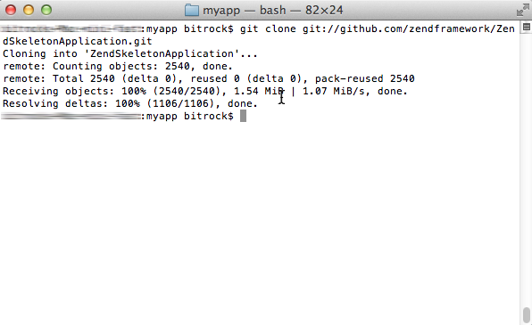
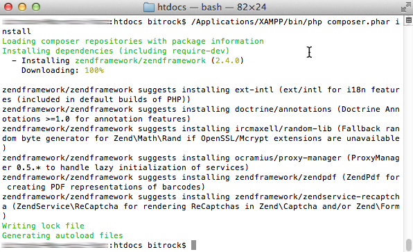
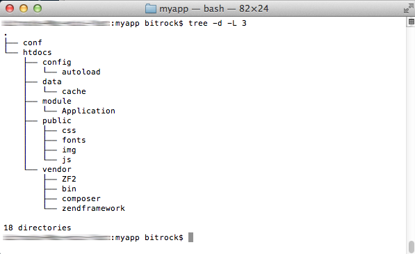
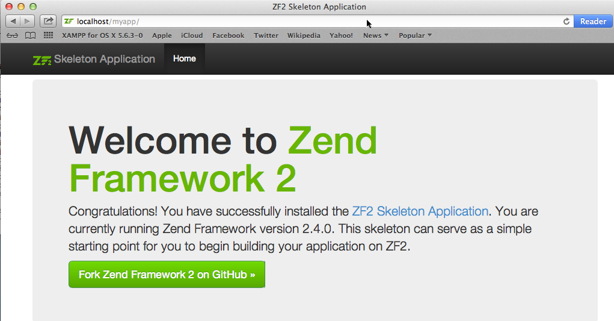

Start a New Zend Framework 2 Project
XAMPP makes it easy to start developing with PHP, and Zend Framework 2 is one of the most popular PHP development frameworks. This guide walks you through the process of initializing a new Zend Framework 2 project with XAMPP.
| This guide uses the command-line git client for Mac OS X. If you don’t already have this, you can install it easily by running the command brew install git from your terminal. It also assumes that the new Zend Framework 2 application will be accessible at the URL http://localhost/myapp/. |
Follow these steps:
-
Open a new terminal and ensure you are logged in as administrator.
-
Within your XAMPP installation directory (usually /Applications/XAMPP/xamppfiles/), create a new directory named apps/ (if it doesn’t already exist). Then, within this new apps/ directory, create a directory to hold your Zend Framework application and its related XAMPP configuration files. In this case, call the directory myapp/.
cd /Applications/XAMPP/xamppfiles/ mkdir apps mkdir apps/myapp
-
Clone the Zend Framework 2 sample application repository to the myapp/ directory using git.
cd /Applications/XAMPP/xamppfiles/apps/myapp git clone git://github.com/zendframework/ZendSkeletonApplication.git

This will produce a ZendSkeletonApplication/ subdirectory in the myapp/ directory. Rename this newly-created subdirectory to htdocs.
cd /Applications/XAMPP/xamppfiles/apps/myapp/ mv ZendSkeletonApplication htdocs
This will be the main working directory for your Zend Framework 2 project. -
Change to the myapp/htdocs/ directory and run the following commands to update Composer (the PHP dependency manager) and install the Zend Framework 2 components.
cd /Applications/XAMPP/xamppfiles/apps/myapp/htdocs /Applications/XAMPP/bin/php composer.phar self-update /Applications/XAMPP/bin/php composer.phar install
In case you encounter SSL errors when running the above commands, update the /Applications/XAMPP/etc/php.ini file and add the openssl.cafile variable to let PHP know where to find your system’s SSL certificates, then try again.
openssl.cafile=/Applications/XAMPP/xamppfiles/share/curl/curl-ca-bundle.crt
Here’s an example of what you might see as Composer downloads and installs dependencies.

-
Next, within the myapp/ directory, create a new conf/ subdirectory.
cd /Applications/XAMPP/xamppfiles/apps/myapp mkdir conf
-
Within the new conf/ subdirectory, use your text editor to create and populate a file named httpd-prefix.conf with the following content:
Alias /myapp/ "/Applications/XAMPP/xamppfiles/apps/myapp/htdocs/public/" Alias /myapp "/Applications/XAMPP/xamppfiles/apps/myapp/htdocs/public" Include "/Applications/XAMPP/xamppfiles/apps/myapp/conf/httpd-app.conf"
-
Within the conf/ subdirectory, also create and populate a file named httpd-app.conf with the following content:
<Directory /Applications/XAMPP/xamppfiles/apps/myapp/htdocs/public> Options +FollowSymLinks AllowOverride All Require all granted </Directory>
-
-
Edit the httpd-xampp.conf file in the etc/extra/ subdirectory of your XAMPP installation directory and add the following line at the end to include the httpd-prefix.conf created earlier.
Include "/Applications/XAMPP/xamppfiles/apps/myapp/conf/httpd-prefix.conf"
Remember to update the above file and directory paths so that they’re valid for your system. -
Check that you have a directory structure like this:

-
Restart the Apache server using the XAMPP control panel.
-
You should now be able to access the Zend Framework 2 skeleton application by browsing to http://localhost/myapp. Here is an example of the default welcome page you should see:

You can now begin developing your Zend Framework 2 application by modifying the skeleton application code. For more information, refer to the Zend Framework 2 User Guide.